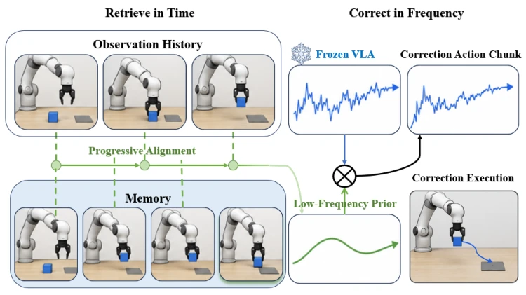
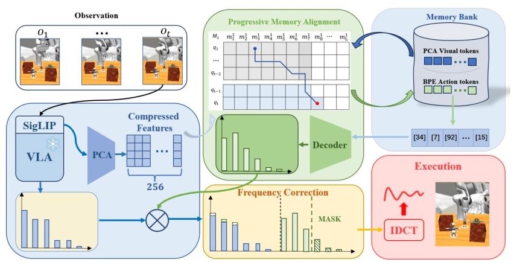
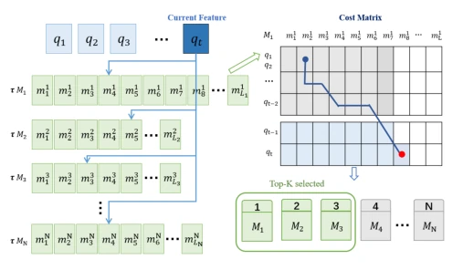
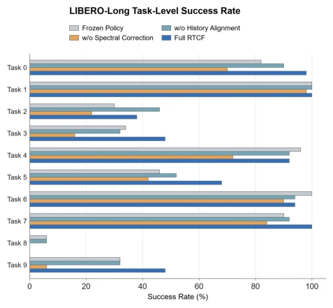
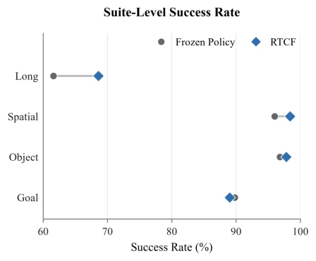
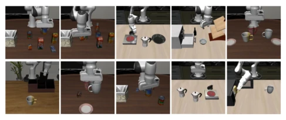

This paper provides a "cheat code" for frozen VLA strategies, named quite artistically, "Time Retrieval, Frequency Correction". The core idea is to avoid moving model parameters and rely on memory (Memory) for correction. The PMA module uses dynamic programming to align history, and DCT frequency domain correction adjusts actions, which sounds very promising. However, upon closer inspection, this is actually a test-time technique of "changing the soup but not the medicine", relying on a large memory bank of successful trajectories; once encountering unseen task distributions, it may fail directly. Moreover, it only improved by 2 percentage points; although significant for long-horizon tasks, the overall improvement is limited. However, it can run on the CPU side with low latency, which deserves praise, after all, large model inference is too expensive. This kind of "hindsight" correction, although it cannot fundamentally solve the model generalization problem, can indeed recover some points in specific scenarios, counting as a remedy to extend the life of frozen models.
研究动机Motivation
冻结的 Vision-Language-Action (VLA) 策略虽然强大，但在长周期操作中容易因为累积误差和视觉混淆而失败 (Zitkovich et al. [2023], Kim et al. [2025])。现有的基于记忆的方法往往只关注视觉相似性，忽略了执行进度的一致性 (Zhao et al. [2026], Wu et al. [2026])。如果直接回放检索到的动作，可能会覆盖掉策略原本的反应性结构。作者指出，相似观察可能出现在不同任务阶段，需要结合历史轨迹来定位进度。此外，现有方法多引入训练或额外组件，而 RTCF 旨在零训练成本下，通过频域修正保留策略的局部细节，仅修正全局运动趋势。这解决了传统检索式方法在开放循环部署中进度错配的问题，无需重新训练即可利用历史成功经验。
Although frozen Vision-Language-Action (VLA) strategies are powerful, they tend to fail in long-horizon operations due to cumulative errors and visual confusion (Zitkovich et al. [2023], Kim et al. [2025]). Existing memory-based methods often focus only on visual similarity, ignoring the consistency of execution progress (Zhao et al. [2026], Wu et al. [2026]). If retrieved actions are played back directly, it may overwrite the strategy's original reactive structure. The authors point out that similar observations may appear at different task stages, requiring the combination of historical trajectories to locate progress. In addition, existing methods often introduce training or additional components, while RTCF aims to preserve the strategy's local details through frequency domain correction under zero training cost, only correcting global motion trends. This solves the problem of progress mismatch in open-loop deployment of traditional retrieval-based methods, allowing the use of historical success experiences without retraining.

Figure 1: High-level intuition of RTCF. Retrieve in Time progressively aligns the growing observation history with a successful memory and identifies an aligned memory position consistent with current progress. Correct in Frequency applies a bounded low-frequency residual from the aligned motion prior while preserving the remaining frozen-policy proposal.
RTCF is divided into two stages: "Time Retrieval" and "Frequency Correction". First, a compact success memory bank is constructed, using SigLIP feature dimensionality reduction and BPE encoding actions. The core is Progressive Memory Alignment (PMA), which maintains the monotonic alignment frontier (frontier) for each memory trajectory, incrementally updates as new observations arrive, finding the best progress position of the current execution history in successful trajectories, rather than simple visual matching. Next, the retrieved action blocks and strategy proposals are transformed into the DCT coefficient space. Define mask G, only correcting low-frequency components (f < Fc) of motion channels. Calculate residuals and clip (clip), preserving the original strategy's high-frequency details and gripper decisions. Finally, execute the inverse transform of the corrected coefficients. The entire process requires no GPU re-inference, completing alignment and frequency domain operations only on the CPU side. This design cleverly decouples memory retrieval and action correction, utilizing experience while preserving the strategy's flexibility.

Figure 2: Overview of RTCF. PMA aligns the growing visual execution history with successful memories, and the resulting action prior provides a bounded low-frequency residual for the frozen VLA proposal.

Figure 3: Progressive Memory Alignment. Each incoming query descriptor appends one dynamic-programming fron- tier to every successful memory. The frontier retains the best monotonic alignment ending at each possible memory position, allowing subsequent observations to revise earlier progress hypotheses. Its minimum provides an aligned memory position and a normalized score for each memory. PMA ranks the memories and returns the top-ranked memory, its aligned memory position, and the associated action record for downstream frequency-domain correc- tion.
Evaluated on four LIBERO suites, using the frozen PI-FAST strategy. 500 trials per suite, totaling 2000/condition. Results show RTCF improved overall success rate from 86.4% to 88.4%, with the most obvious improvement on the most difficult LIBERO-Long (61.6% -> 68.6%). Ablation studies show that removing history-aware alignment (history-free) or frequency selection (frequency-selective) both lead to performance degradation, especially when frequency correction is missing, SR drops to 50.0%. Latency tests show an increase of about 11ms per action block, mainly on the CPU side. Some tasks show regressions (regressions), indicating memory bank matching is not a panacea. Experiments also compared other VLA models; RTCF performed excellently under matching protocols, proving its effectiveness as a test-time adapter, especially with significant advantages in long-horizon tasks.

Figure 6: LIBERO-Long task-level success under the frozen policy, two component ablations, and full RTCF.

Figure 5: Suite-level LIBERO success rates for the frozen PI-FAST baseline and RTCF over 500 episodes per condi- tion. The largest gain is on LIBERO-Long.
其他图片Other Figures

Figure 4: Representative scenes from the ten multi-stage LIBERO-Long tasks, ordered from Task 0 to Task 9.